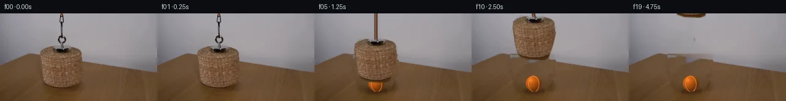
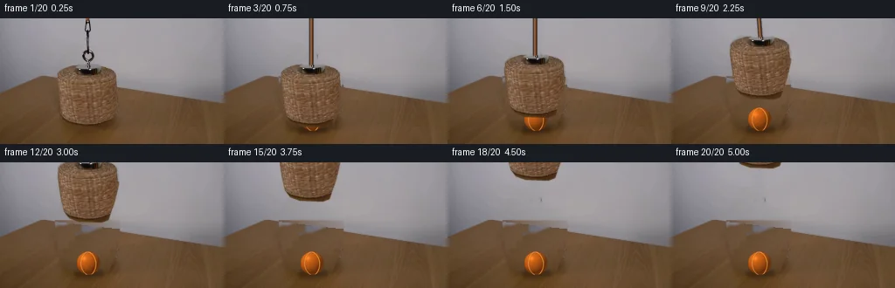
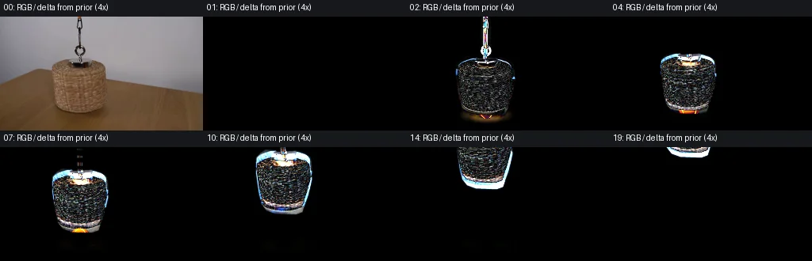

V0 · 初版 · 最终提交
![]()
Observable Generation Trace
把最终像素视频、Harness 冻结的每轮候选、真实工具事件和 Agent 自述放在同一页。可观测证据与模型自述分开标记，避免把“模型说它检查过”误当成真实工具调用。
![首帧]()
Static locked-off single-shot with fixed frame throughout filmed with constant framerate in real-time. The scene shows a realistic scientific demonstration. The scene only contains the described setup and actions. The orange tennis ball is on the table. The woven basket is attached to a strong magnet that is connected to an orange cord. The woven basket hanging on an orange cord covers the ball and is then lifted to the top of the frame.
首帧显示在左侧播放器初始画面。Track 权限、隔离和 tensor 一致性来自 run manifest，而不是 METHOD.md。
默认勾选初版和最终版；可选其他版本一起同步播放。仅检查图更新的连续重复快照已合并，回退旧视频仍保留为一次修订。
Observable events
来源：events.jsonl + run manifest
此 Track 禁止读取输出图片。逐轮预览由外部 Harness 自动冻结，只用于事后审计，生成 Agent 当时看不到这些页面。
Frozen candidates
每张图来自该 round 的真实 00 / 01 / 05 / 10 / 19 帧

pixels 408117e8fad6b333 · code b032ca32d3364e49
--- previous/generate.py
+++ current/generate.py
@@ -0,0 +1,272 @@
+#!/usr/bin/env python3
+"""Generate the locked-camera PixelWorld continuation using local pixel operations."""
+
+from pathlib import Path
+import hashlib
+import numpy as np
+from PIL import Image, ImageDraw, ImageFilter
+
+from artifact_io import save
+
+
+ROOT = Path(__file__).resolve().parent
+W, H = 256, 144
+
+
+def smoothstep(v):
+ v = np.clip(v, 0.0, 1.0)
+ return v * v * (3.0 - 2.0 * v)
+
+
+def antialiased_polygon(points, blur=0.55, scale=4):
+ """Return a soft 8-bit mask from a polygon, rendered above target resolution."""
+ im = Image.new("L", (W * scale, H * scale), 0)
+ d = ImageDraw.Draw(im)
+ d.polygon([(int(x * scale), int(y * scale)) for x, y in points], fill=255)
+ im = im.resize((W, H), Image.Resampling.LANCZOS)
+ if blur:
+ im = im.filter(ImageFilter.GaussianBlur(blur))
+ return np.asarray(im, dtype=np.uint8)
+
+
+def table_boundary(x):
+ """Back edge of the tabletop through the hidden central interval."""
+ x = np.asarray(x, dtype=np.float32)
+ left = 86.0 - 0.36 * x
+ right = 67.0 + 0.115 * (x - 58.0)
+ return np.where(x < 58, left, right)
+
+
+def reconstruct_background(src, apparatus_mask):
+ """Create a deterministic clean plate behind the original apparatus."""
+ out = src.astype(np.float32).copy()
+ yy, xx = np.mgrid[0:H, 0:W]
+
+ # Smooth wall estimate: horizontal interpolation from uncontaminated columns.
+ wall = np.zeros_like(out)
+ x0, x1 = 54, 148
+ frac = np.clip((xx - x0) / (x1 - x0), 0, 1)[..., None]
+ left = src[:, x0].astype(np.float32)[:, None, :]
+ right = src[:, x1].astype(np.float32)[:, None, :]
+ wall[:] = left * (1 - frac) + right * frac
+ # Preserve the slight photographed grain rather than making a flat digital patch.
+ rng = np.random.default_rng(171)
+ grain = rng.normal(0, 0.75, (H, W, 1))
+ wall += grain
+
+ # Wood estimate: row/column color trend plus re-used high-frequency texture from
+ # an uncontaminated strip on the left of the apparatus.
+ wood = np.zeros_like(out)
+ donor = src[:, 4:58].astype(np.float32)
+ for y in range(H):
+ base_row = donor[y]
+ # Repeat with a phase that changes slowly by row, suppressing visible seams.
+ inds = (np.arange(W) + 13 + (y // 9) * 7) % base_row.shape[0]
+ samples = base_row[inds]
+ # Wood gets modestly brighter toward the image center/right in the source.
+ trend = ((np.arange(W) - 42)[:, None] * np.array([0.040, 0.030, 0.022]))
+ wood[y] = samples + trend
+ # Locally smooth the donor texture while retaining photographed fine noise.
+ wood_im = Image.fromarray(np.uint8(np.clip(wood, 0, 255))).filter(
+ ImageFilter.GaussianBlur(1.15)
+ )
+ wood = np.asarray(wood_im, dtype=np.float32)
+ wood += rng.normal(0, 0.65, wood.shape[:2])[..., None]
+
+ is_table = yy >= table_boundary(xx)
+ plate = np.where(is_table[..., None], wood, wall)
+
+ # Rebuild only the hidden pixels; a slight mask expansion removes source halos.
+ m = Image.fromarray(apparatus_mask).filter(ImageFilter.MaxFilter(5))
+ m = np.asarray(m, dtype=np.float32) / 255.0
+ out = out * (1 - m[..., None]) + plate * m[..., None]
+ return np.uint8(np.clip(out + 0.5, 0, 255))
+
+
+def shifted_rgba_layer(src, alpha, dx, dy):
+ """Shift source pixels and alpha without wraparound."""
… diff truncated; 185 more lines …pixels 408117e8fad6b333 · code fe19725c8724aad1
--- previous/generate.py
+++ current/generate.py
@@ -93,7 +93,7 @@
if ys1 > ys0 and xs1 > xs0:
layer[yd0:yd1, xd0:xd1, :3] = src[ys0:ys1, xs0:xs1]
layer[yd0:yd1, xd0:xd1, 3] = alpha[ys0:ys1, xs0:xs1]
- return Image.fromarray(layer, "RGBA")
+ return Image.fromarray(layer)
def draw_cord(base, bottom_y, x_bottom):
@@ -142,7 +142,7 @@
pix[..., :3] = np.uint8(np.clip(rgb, 0, 255))
pix[..., 3] = np.uint8(edge_alpha * 255)
pix[~sphere & (edge_alpha <= 0), 3] = 0
- ball = Image.fromarray(pix, "RGBA")
+ ball = Image.fromarray(pix)
# Tennis-ball seams: two curved pale-orange arcs clipped by the sphere.
seams = Image.new("RGBA", (sw, sh), (0, 0, 0, 0))
@@ -237,7 +237,7 @@
# The exact source is held for a natural quarter-second pause.
frames.append(src.copy())
continue
- scene = Image.fromarray(clean, "RGB").convert("RGBA")
+ scene = Image.fromarray(clean).convert("RGBA")
scene = Image.alpha_composite(scene, shadow_layer(lift, dx))
scene = Image.alpha_composite(scene, ball_shadow)
scene = Image.alpha_composite(scene, ball)Final visual checks
Harness 保存的最终产物


Agent claims
以下文字由生成 Agent 撰写，不等同于工具证据
first_frame.pngThe source was inspected only with local RGB arrays (Pillow/NumPy), never with an image viewer. It is an RGB image of 256×144 pixels. The upper field is a cool neutral wall, roughly RGB (145–167, 142–163, 147–165), and the lower field is a warm wooden tabletop, roughly RGB (92–118, 65–88, 40–61). The irregular wall/table boundary slopes from about y=64 at the left to y=91 at the right, consistent with a fixed oblique tabletop perspective.
The described apparatus is centered close to x=101. A narrow, dark/orange cord occupies approximately x=95–107 from the top edge through y=55. A very dark attachment/magnet region spans approximately x=90–112, y=56–65. The woven inverted basket occupies approximately x=65–135, y=54–124. Its sides taper inward toward the bottom/contact region; warm highlights and alternating darker strips provide the woven texture. A particularly dark contact/shadow band is present near x=79–122, y=118–124. The orange tennis ball is covered in the initial frame, so it is not separately measurable; it will be synthesized at the basket center with a 13-pixel radius and a small table contact shadow once revealed.
Locked-shot constraints: the 256×144 camera frame, background wall, table perspective, and tabletop texture remain fixed. Only the cord length, attached magnet/basket assembly, its soft shadow, and the newly revealed stationary ball change.
Motion uses smoothstep timing with tiny deterministic horizontal offsets (at most 2 px) to suggest a hanging load without camera movement. Newly uncovered areas are reconstructed from neighboring tabletop samples, with texture-preserving deterministic noise and feathered seams.
This sequence was generated entirely with local Pillow/NumPy pixel operations. No image viewer, image-read tool, external model, network source, mask, or rendering engine was used.
first_frame.png was inspected numerically as an RGB array. Color distributions, row/column samples, gradients, thresholded connected components, and coarse text grids were used to locate the wall/table boundary, orange cord, dark magnet, and woven basket. The initial basket already occludes the ball.
The implementation in generate.py does the following:
first_frame.png and holds that composition in frame 01.The final artifact is 20 RGB frames at 256×144 and 4 fps. artifact_io.py packs each RGB pixel as uint32 0xRRGGBB in a (144, 256, 20) tensor. The generator then reloads every PNG and asserts exact equality against both the in-memory frames and pixels.npz. It also asserts exact source equality for frame 00. inspection.png is the standard selected-frame contact sheet; transition_check.png is an amplified consecutive-difference audit sheet. These sheets were generated but not visually reviewed, in accordance with the numeric-inspection-only constraint.